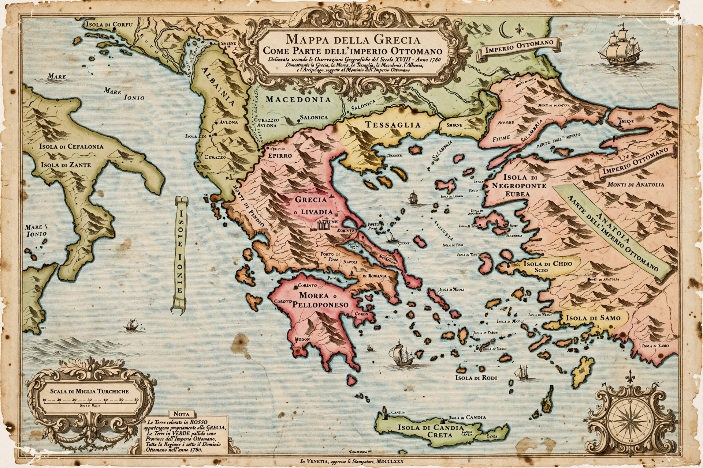

Ottoman Greece
| Ottoman Greece | |
|---|---|
| Period | c. 1453 – 1830 (some regions to 1913) |
| Capital (admin.) | Istanbul; regional sanjak centres |
| Religion | Greek Orthodoxy (majority), Islam |
| Succeeded by | Kingdom of Greece |

Ottoman Greece refers to the period of Greek history when most of Greece was ruled by the Ottoman Empire, from the mid-15th century until the successful Greek War of Independence that began in 1821. The conquest began with the fall of Constantinople in 1453 and the capture of Athens in 1458, and was completed over the following decades as the Ottomans absorbed the remaining Byzantine and Latin territories.
Administration
Greek lands were divided into sanjaks within eyalets such as Rumelia and the Archipelago. Land was largely held under the timar system, in which cavalrymen (sipahis) received revenue from assigned plots in return for military service. Over time, tax farming and large estates (çiftliks) became more common, particularly in the 17th and 18th centuries.
Society and religion
The Greek Orthodox population was organised under the millet system, with the Ecumenical Patriarch of Constantinople recognised as ethnarch of the Orthodox Christians. The Church preserved Greek language and identity, though relations with the Ottoman authorities were often tense. Devshirme, the levy of Christian boys for the Janissary corps, was practised mainly in the earlier centuries.
Economy and culture
Greek merchants became prominent in Balkan and Mediterranean trade, and Greek communities flourished in cities such as Thessaloniki, Smyrna and Constantinople. The Phanariots, wealthy Greek families of Istanbul, supplied dragomans and, from the early 18th century, governors (hospodars) of Moldavia and Wallachia. A Greek cultural revival in the 18th century, associated with figures such as Adamantios Korais and Rigas Feraios, laid the ideological groundwork for independence.
The road to independence
The secret society Filiki Eteria, founded in Odessa in 1814, prepared a general uprising. Revolts broke out in 1821 in the Peloponnese and the Danubian principalities; after years of war and great-power intervention at the Battle of Navarino (1827), Greece was recognised as an independent state by the London Protocol of 1830. Some Greek-inhabited regions, including Thessaly, Epirus, Macedonia and Crete, remained under Ottoman rule until the Balkan Wars of 1912–13.
See also: Byzantine Empire, Greek War of Independence, Tourkokratia.